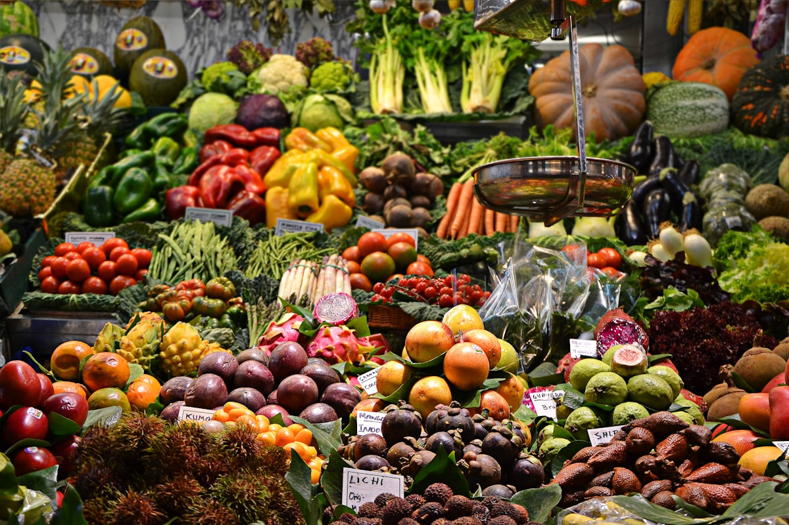

Targ • Kraków
Stary Kleparz
Najstarszy nieprzerwanie działający targ Krakowa — funkcjonuje od XIV wieku. Sery, wędliny, pieczywo, kasze i sezonowe warzywa prosto od producentów. To tu widać, czym naprawdę żywi się miasto.
Adres: Rynek Kleparski 20, Kraków · czynne pon.–pt. 6:00–18:00, sob. do 16:00
Czytaj: weekend w Krakowie